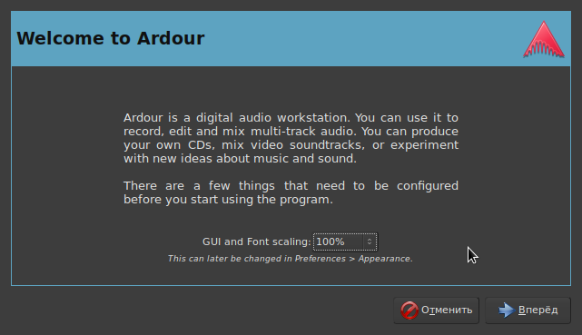
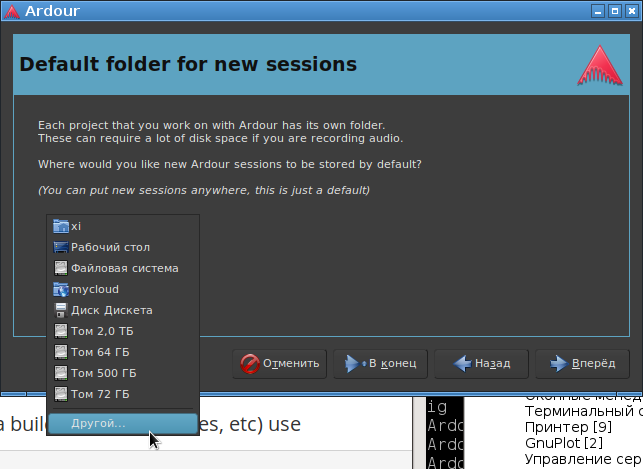
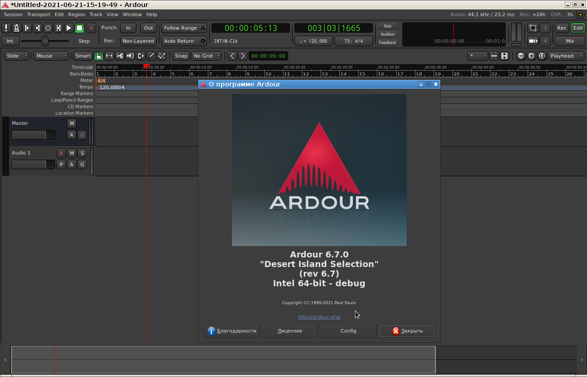

Здесь описан способ установки Ardour 6.7 из исходников в Debian Linux 9. Такая установка гарантирует, что в Ardour не будет время от времени появляться "назойливый" экран (nag-screen), в котором постоянно предлагаться купить платную версию Ardour, и не будет выключаться звук каждые 10 минут (periodically goes silent after 10 minutes).
Для сборки Ardour, в операционной системе должен быть установлен компилятор gcc, исходники основных Linux-библиотек и следующий набор пакетов для работы с музыкой и звуком:
a2jmidid (8~dfsg0-3)
jack-capture (0.9.71-2)
jack-keyboard (2.7.1-1+b1)
jack-midi-clock (0.4.3-1)
jack-mixer (10-1+b1)
jack-stdio (1.4-1+b2)
jack-tools (20131226-1+b1)
jackd (5)
jackd2 (1.9.10+20150825git1ed50c92~dfsg-5)
jackd2-firewire (1.9.10+20150825git1ed50c92~dfsg-5)
libconfig++9v5 (1.5-0.3)
libffado2 (2.3.0-2+b1)
libjack-jackd2-dev (1.9.10+20150825git1ed50c92~dfsg-5)
liblo7 (0.28-5+b2)
libxml++2.6-2v5 (2.40.1-1)
meterbridge (0.9.2-13)
python-fpconst (0.7.2-6)
qjackctl (0.4.4-1)
libboost-dev (1.62.0.1)
libboost1.62-dev (1.62.0+dfsg-4)
libglibmm-2.4-dev (2.50.0-1)
libsigc++-2.0-dev (2.10.0-1)
libsndfile1 (1.0.27-3) to 1.0.27-3+deb9u1
libsndfile1:i386 (1.0.27-3) to 1.0.27-3+deb9u1
libsndfile1-dev (1.0.27-3+deb9u1)
curl (7.52.1-5+deb9u9) to 7.52.1-5+deb9u14
libcurl3 (7.52.1-5+deb9u9) to 7.52.1-5+deb9u14
libcurl3-gnutls (7.52.1-5+deb9u9) to 7.52.1-5+deb9u14
libcurl4-gnutls-dev (7.52.1-5+deb9u14)
libarchive-dev (3.2.2-2+deb9u2)
libarchive-tools (3.2.2-2+deb9u2)
liblo-dev (0.28-5+b2)
liblo-tools (0.28-5+b2)
liblo10k1-0 (1.1.3-1)
liblo10k1-dev (1.1.3-1)
libtag1-dev (1.11.1+dfsg.1-0.1)
libtagc0 (1.11.1+dfsg.1-0.1)
libtagc0-dev (1.11.1+dfsg.1-0.1)
bbc-vamp-plugins (1.1-dmo1)
libvamp-sdk2v5 (1:2.7.1-dmo1)
vamp-plugin-sdk (1:2.7.1-dmo1)
librubberband-dev (1.8.1-7)
rubberband-cli (1.8.1-7)
rubberband-ladspa (1.8.1-7)
rubberband-vamp (1.8.1-7)
fftw-dev (2.1.5-4.1)
fftw2 (2.1.5-4.1)
libclfft-dev (2.12.2-1+b1)
libclfft2 (2.12.2-1+b1)
libfftw3-bin (3.3.5-3)
libfftw3-dev (3.3.5-3)
libfftw3-long3 (3.3.5-3)
libfftw3-mpi-dev (3.3.5-3)
libfftw3-mpi3 (3.3.5-3)
libfftw3-quad3 (3.3.5-3)
libnfft3-2 (3.3.2-2)
libnfft3-dev (3.3.2-2)
libnfft3-double2 (3.3.2-2)
libnfft3-long2 (3.3.2-2)
libnfft3-single2 (3.3.2-2)
libpoclu-dev (0.13-8+b5)
libpoclu1 (0.13-8+b5)
mffm-fftw-dev (1.7-4)
mffm-fftw1 (1.7-4)
ocl-icd-opencl-dev (2.2.11-1)
opencl-c-headers (2.1-1)
opencl-clhpp-headers (2.0.10-1)
opencl-headers (2.1-1)
aubio-tools (0.4.3-4)
libaubio-dev (0.4.3-4)
libaubio5 (0.4.3-4)
python3-aubio (0.4.3-4)
python3-numpy (1:1.12.1-3)
libusb-1.0-0-dev (2:1.0.21-1)
libusb-1.0-doc (2:1.0.21-1)
libusb-dev (2:0.1.12-30)
libbluetooth3 (5.43-2+deb9u1) to 5.43-2+deb9u3
libbluetooth-dev (5.43-2+deb9u3)
libcwiid-dev (0.6.00+svn201-3.2+b1)
libcwiid1 (0.6.00+svn201-3.2+b1)
libev-dev (1:4.22-1+b1)
libev4 (1:4.22-1+b1)
libuv1-dev (1.9.1-3)
libwebsockets-dev (2.0.3-2)
libwebsockets8 (2.0.3-2)
libcairomm-1.0-dev (1.12.0-1+b1)
libpangomm-1.4-dev (2.40.1-3)
libraptor2-0 (2.0.14-1+b1) to 2.0.14-1+deb9u1
ladspa-sdk (1.13-3)
liblrdf0 (0.6.1-1)
liblrdf0-dev (0.6.1-1)
libraptor2-dev (2.0.14-1+deb9u1)
libyajl-dev (2.1.0-2+b3)
raptor2-utils (2.0.14-1+deb9u1)
libresample1 (0.1.3-4)
libresample1-dev (0.1.3-4)
libsamplerate0-dev (0.1.8-8+b2)
samplerate-programs (0.1.8-8+b2)
abgate (1.1.8-1)
avw.lv2 (0.1.6~dfsg0-1+b2)
drumkv1 (0.8.0-1)
drumkv1-common (0.8.0-1)
drumkv1-lv2 (0.8.0-1)
eq10q (2.2~repack0-2)
fomp (1.0.0~dfsg0-2)
ir.lv2 (1.3.3~dfsg0-1)
jalv (1.6.0~dfsg0-2)
libargtable2-0 (13-1)
libatkmm-1.6-dev (2.24.2-2)
libftgl2 (2.1.3~rc5-4+nmu1.1)
libgtkmm-2.4-dev (1:2.24.5-1)
liblilv-dev (0.24.2~dfsg0-1)
libltc11 (1.3.0-1)
liblv2dynparam1-dev (2-6)
liblv2dynparamhost1-1 (2-6)
liblv2dynparamplugin1-0 (2-6)
libpaq0 (1.0.5-3+b1)
libserd-dev (0.26.0~dfsg0-1)
libsord-dev (0.16.0~dfsg0-1+b1)
libsratom-dev (0.6.0~dfsg0-1)
libzita-convolver3 (3.1.0-5)
lv2-c++-tools (1.0.5-3+b1)
lv2-dev (1.14.0~dfsg1-1)
lv2file (0.83-1+b1)
lv2vocoder (1-5)
lvtk-dev (1.2.0~dfsg0-2+b1)
lvtk-tools (1.2.0~dfsg0-2+b1)
samplv1-common (0.8.0-1)
samplv1-lv2 (0.8.0-1)
swh-lv2 (1.0.16+git20160519~repack0-3)
x42-plugins (20161230-1)
zam-plugins (3.7~repack2-3)
libsuil-dev (1:0.8.4-dmo1+deb9u1)
libsoundtouch-dev (1.9.2-2+deb9u1)
Эти пакеты можно установить под рутом следующией командой:
apt-get install a2jmidid jack-capture jack-keyboard jack-midi-clock jack-mixer jack-stdio jack-tools jackd jackd2 jackd2-firewire libconfig++9v5 libffado2 libjack-jackd2-dev liblo7 libxml++2.6-2v5 meterbridge python-fpconst qjackctl libboost-dev libboost1.62-dev libglibmm-2.4-dev libsigc++-2.0-dev libsndfile1 libsndfile1:i386 libsndfile1-dev curl libcurl3 libcurl3-gnutls libcurl4-gnutls-dev libarchive-dev libarchive-tools liblo-dev liblo-tools liblo10k1-0 liblo10k1-dev libtag1-dev libtagc0 libtagc0-dev bbc-vamp-plugins libvamp-sdk2v5 vamp-plugin-sdk librubberband-dev rubberband-cli rubberband-ladspa rubberband-vamp fftw-dev fftw2 libclfft-dev libclfft2 libfftw3-bin libfftw3-dev libfftw3-long3 libfftw3-mpi-dev libfftw3-mpi3 libfftw3-quad3 libnfft3-2 libnfft3-dev libnfft3-double2 libnfft3-long2 libnfft3-single2 libpoclu-dev libpoclu1 mffm-fftw-dev mffm-fftw1 ocl-icd-opencl-dev opencl-c-headers opencl-clhpp-headers opencl-headers aubio-tools libaubio-dev libaubio5 python3-aubio python3-numpy libusb-1.0-0-dev libusb-1.0-doc libusb-dev libbluetooth3 libbluetooth-dev libcwiid-dev libcwiid1 libev-dev libev4 libuv1-dev libwebsockets-dev libwebsockets8 libcairomm-1.0-dev libpangomm-1.4-dev libraptor2-0 ladspa-sdk liblrdf0 liblrdf0-dev libraptor2-dev libyajl-dev raptor2-utils libresample1 libresample1-dev libsamplerate0-dev samplerate-programs abgate avw.lv2 drumkv1 drumkv1-common drumkv1-lv2 eq10q fomp ir.lv2 jalv libargtable2-0 libatkmm-1.6-dev libftgl2 libgtkmm-2.4-dev liblilv-dev libltc11 liblv2dynparam1-dev liblv2dynparamhost1-1 liblv2dynparamplugin1-0 libpaq0 libserd-dev libsord-dev libsratom-dev libzita-convolver3 lv2-c++-tools lv2-dev lv2file lv2vocoder lvtk-dev lvtk-tools samplv1-common samplv1-lv2 swh-lv2 x42-plugins zam-plugins libsuil-dev libsoundtouch-dev
После чего в каталоге с исходниками (в этом каталоге находится файл waf), от обычного пользователя, надо дать команду настройки сборки:
./waf configure
Если эта команда завершится без ошибок, можно переходить к следующему этапу. Если же будет ошибка, надо понять, какого пакета не хватает и установить его.
Далее, снова от обычного пользователя, запускается сборка:
./waf
Сборка должна завершиться сообщениями:
...
[1152/1154] Compiling luasession/ardour-lua.sh.in
[1153/1154] Compiling session_utils/ardour-util.sh.in
[1154/1154] Symlinking build/libs/ardouralsautil/libardouralsautil.so
Waf: Leaving directory `Ardour_6_7_0/build'
'build' finished successfully (55m26.079s)
Далее сразу можно запустить программу Ardour, опять же от обычного пользователя, путем запуска на исполнение скомпилированного бинарника:
./gtk2_ardour/ardev
В результате должно появиться окно первичной настройки программы:

На следующем экране надо обязательно выбрать директорию, в которой будут создаваться проекты по-умолчанию, иначе они будут создаваться прямо в пользовательской директории. Для этого нужно в выпадающем списке выбрать пункт "Другой", и указать каталог:

Все остальные настройки можно оставить без изменений. После прохождения "визарда" и первичной настройки проекта, запустится сам Ardour:

Все, можно писать музыку в самом навороченном секвенсоре в мире Linux с открытым исходным кодом.
В документации на Ardour ( https://ardour.org/building_linux.html ) написано, что можно собрать пакет (bundle) с Ardour так, как это делают товарищи на официальном сайте. Для этого педлагается выполнить следующие команды:
cd tools/linux_packaging
./build --public --strip some
./package --public --singlearch
Однако, выполнение данных команд сопряжено с выводом кучи сообщений об ошибках:
> ./build --public --strip some
arg = --public
arg = --strip
Version is 6.7.0
Info string is 6.7.0 built on pangolinux by xi on Пн июн 21 15:01:43 MSK 2021
Architecture is x86_64
Removing old Ardour_x86_64-6.7.0-dbg tree ...
Building new app directory structure ...
Copying ardour executable ....
'../../build/gtk2_ardour/ardour-6.7.0' -> 'Ardour_x86_64-6.7.0-dbg/bin/ardour-6.7.0'
NLS support ...
I hope you remembered to run scons msgupdate!
!!!! WARNING !!!! - Did not find any .mo files in ../../gtk2_ardour
!!!! WARNING !!!! - Did not find any .mo files in ../../libs/ardour
!!!! WARNING !!!! - Did not find any .mo files in ../../libs/gtkmm2ext
Copying GTK engines ...
cp: не удалось выполнить stat для '/home/xi/gtk/inst/lib/gtk-2.0/2.10.0/engines/libpixmap.so': Нет такого файла или каталога
cp: не удалось выполнить stat для '../../build/../mixer_settings/*.lua': Нет такого файла или каталога
'../../build/../share/templates' -> 'Ardour_x86_64-6.7.0-dbg/share/templates'
'../../build/../share/templates/.stub' -> 'Ardour_x86_64-6.7.0-dbg/share/templates/.stub'
'../../build/../share/plugin_metadata' -> 'Ardour_x86_64-6.7.0-dbg/share/plugin_metadata'
'../../build/../share/plugin_metadata/plugin_statuses' -> 'Ardour_x86_64-6.7.0-dbg/share/plugin_metadata/plugin_statuses'
'../../build/../share/plugin_metadata/plugin_tags' -> 'Ardour_x86_64-6.7.0-dbg/share/plugin_metadata/plugin_tags'
'../../build/../share/plugin_metadata/wscript' -> 'Ardour_x86_64-6.7.0-dbg/share/plugin_metadata/wscript'
cp: не удалось выполнить stat для '../../build/libs/backends/wavesaudio/lib*.so*': Нет такого файла или каталога
'../../build/session_utils/ardour6-copy-mixer' -> 'Ardour_x86_64-6.7.0-dbg/lib/ardour6-copy-mixer'
'../../build/session_utils/ardour6-export' -> 'Ardour_x86_64-6.7.0-dbg/lib/ardour6-export'
'../../build/session_utils/ardour6-fix_bbtppq' -> 'Ardour_x86_64-6.7.0-dbg/lib/ardour6-fix_bbtppq'
'../../build/session_utils/ardour6-new_empty_session' -> 'Ardour_x86_64-6.7.0-dbg/lib/ardour6-new_empty_session'
'../../build/session_utils/ardour6-new_session' -> 'Ardour_x86_64-6.7.0-dbg/lib/ardour6-new_session'
'../../build/luasession/luasession' -> 'Ardour_x86_64-6.7.0-dbg/lib/ardour6-lua'
../../build/libs/surfaces/control_protocol:../../build/libs/ardour:../../build/libs/midi++2:../../build/libs/pbd:../../build/
libs/gtkmm2ext:../../build/libs/glibmm2:../../build/libs/canvas:../../build/libs/widgets:../../build/libs/waveview:../../buil
d/libs/evoral:../../build/libs/evoral/src/libsmf:../../build/libs/audiographer:../../build/libs/temporal:../../build/libs/lib
ltc:../../build/libs/qm-dsp:../../build/libs/ardouralsautil:../../build/libs/ptformat:../../build/gtk2_ardour
cp: не удалось выполнить stat для '/home/xi/gtk/inst/lib/libsoftokn3.so': Нет такого файла или каталога
cp: не удалось выполнить stat для '/home/xi/gtk/inst/lib/libfreeblpriv3.so': Нет такого файла или каталога
cp: не удалось выполнить stat для '/home/xi/gtk/inst/lib/libnsspem.so': Нет такого файла или каталога
./build: строка 520: chrpath: команда не найдена
...
Разбираться куда делись необходимые файлы переводов, библиотек, скриптов, и куда засунуты файлы конфигурации Scons, нет никакого желания. Главное, что Ardour работает прямо из директории, где он был скомпилирован. В принципе, Ardour можно проинсталлировать в систему с помощью команды ./waf install, запущенной от рута. Но тогда убрать файлы этой программы из системы можно только в том случае, если не удалять каталог с исходниками, и запустить в нем команду ./waf uninstall. Удалить файлы программы через пакетный менеджер не получится. В общем, единственный понятный способ пользоваться самосбрным Ardour - это запускать его бинарник там, где он собран.